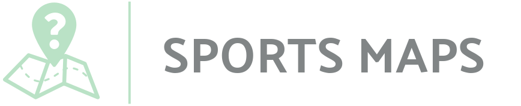

<mat-toolbar class="toolbar">
  
  <div class="spacer"></div>

  <!--TODO: make the github link look like https://material.angular.io/components/divider/api-->
  <!-- <a mat-raised-button color="accent" target="_blank"
    href="https://github.com/jsmit2239/sports-maps-ui-angular">Github</a> -->


  <a mat-raised-button color="accent" class="github-button" target="_blank"
    href="https://github.com/jsmit2239/sports-maps-ui-angular">
    <span>
      GitHub
    </span>
  </a>
</mat-toolbar>